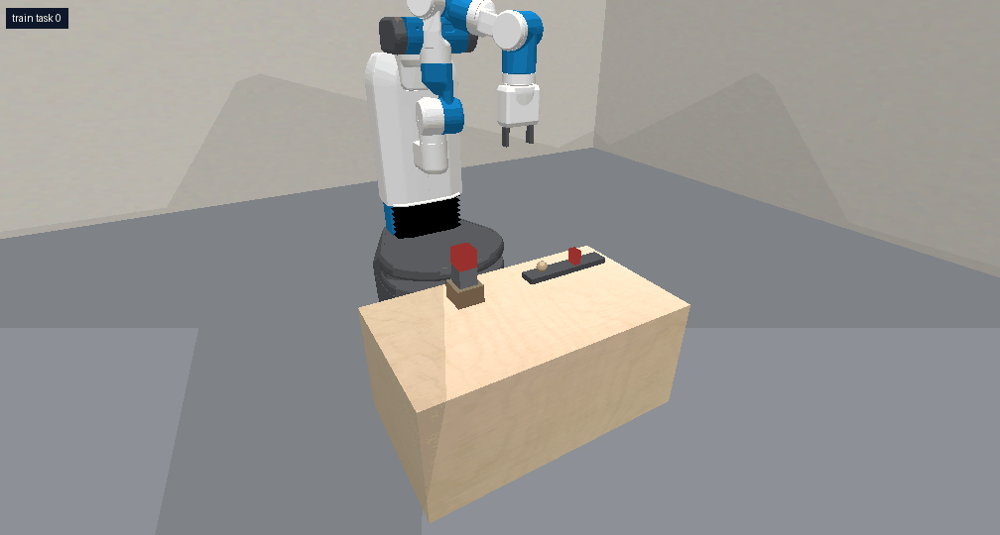

Launcher
pybullet_launcher
Cock a spring launcher so its ball knocks only the red top block off a tower. Launch speed depends on how far the plunger is compressed, and balls are limited.

Environment source · run with python predicators/main.py --env pybullet_launcher